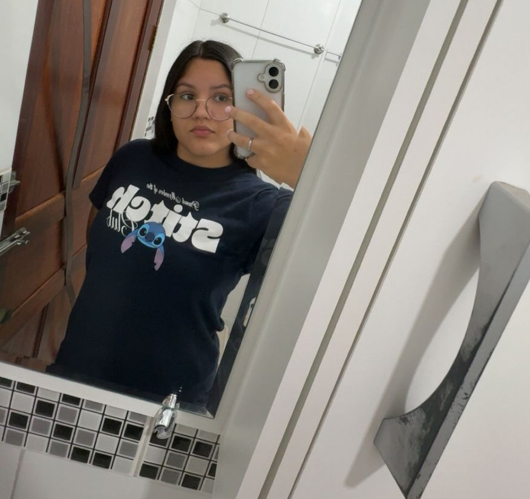

Apresentação
Meu nome é Gabriella, tenho 15 anos e amo escutar/cantar música, fazer esporte e sair/jogar com meus amigos!
Curiosidades
- Já pratiquei vários esportes, como natação, futebol, vôlei e balé. Esporte é uma das coisas que mais amo!
- Amo escutar música, cantar e sair com meus amigos!
- Quero praticar outros esportes que ainda não fiz, como alguma arte marcial!
- Meu sonho é morar fora do Brasil ou viajar para algum país da Ásia/Europa.
- Tenho algumas intolerâncias a alguns alimentos como: Glúten, Farinha de Trigo, Camarão e Corantes Artificiais
Lugares Visitados
- Já conheci alguns lugares da Bahia como Ilhéus, Macaúbas e Vitória da Conquista.
- Além do Nordeste, já fui para Praia Grande!
- Já cheguei a ir em outras cidades dentro de São Paulo, por conta das competições da natação, tipo: Limeira, São Caetano, São Bernardo do Campo, Jundiaí, Mogi das Cruzes e etc.
- Já fui na sede social do Corinthians, localizado no Parque São Jorge, para uma competição também